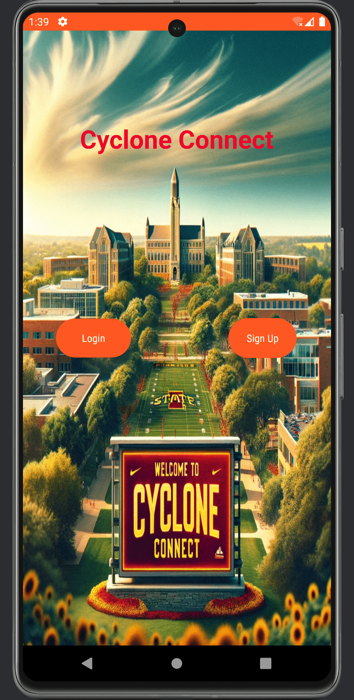
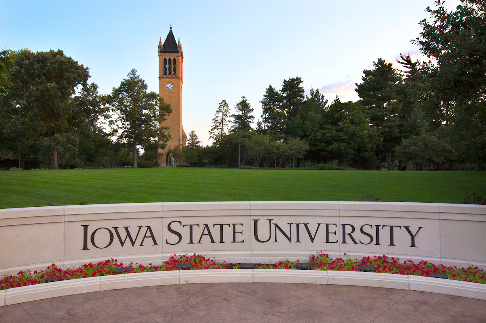

Hi There,
I'm Abhay Prasanna Rao
I am a Software Engineer & AI Architect
B.S. Computer Science, Summa Cum Laude, Iowa State University
i am into
About MeI am a Software Engineer & AI Architect
B.S. Computer Science, Summa Cum Laude, Iowa State University
i am into
About Me
I'm a Software Engineer at Kingland Systems, where I build and maintain enterprise-level AWS cloud infrastructure and SaaS platforms. I graduated Summa Cum Laude from Iowa State University in December 2025 with a B.S. in Computer Science (Minor: Data Science & AI, GPA: 3.90). I'm passionate about AI-powered applications, cloud architecture, and full-stack development. Recently won First Place at the Pi515 AI Challenge 2025 with an AI crop disease detection system.
place : Ames, Iowa
January 2026 – Present
- Managed and updated AWS cloud infrastructure using Terraform, AWS Console, and AWS CLI across EC2, S3, ECS with Fargate, ECR, RDS, ElastiCache (Redis), CloudWatch, Route53, and Transfer Family.
- Collaborated with client support teams to interpret requirements, surface defects, and deliver well-documented resolutions across the Independence SaaS platform.
- Contributed to modernizing legacy components by transitioning JSP pages and XML configurations to current backend and frontend frameworks.
- Interfaced application layers with Redis and contributed Data Lakehouse improvements using AWS Glue, DMS, and Redshift.
- Supported CI/CD pipeline monitoring and troubleshooting using GitLab, ensuring smooth deployments across environments.
September 2024 – December 2025
- Architected and developed the Indicator Portal platform, designing full-stack infrastructure including database schema, RESTful API endpoints, routing logic, and Data Hub pages with dynamic PDF display.
- Led redesign of Iowa Zoning Guide website, funded by Iowa Finance Authority, visualizing zoning regulations and their impact on housing development across Iowa municipalities.
- Spearheaded migration of Extension AI housing resource assistant to Anything LLM platform, developing role-based visibility controls, custom routes, and ISU-branded UI while managing Azure endpoint connections.
- Led AI integration using Retrieval-Augmented Generation (RAG) techniques and conducted data migration from MariaDB to Azure SQL databases.
May 2025 – August 2025
- Analyzed and remediated 60+ SAST security vulnerabilities across enterprise regulatory compliance software, reducing operational noise and improving threat detection accuracy.
- Modernized critical infrastructure by upgrading Java and Tomcat versions using Docker containers and GitLab CI/CD with zero downtime deployment.
- Architected AWS cloud solutions using Lambda, S3, Batch, ECS, Parameter Store, and Secrets Manager for scalable SFTP infrastructure enabling international client data delivery.
- Eliminated technical debt by migrating/removing 60+ libraries and modernizing JUnit test classes, achieving 100% production deployment success rate.
- Led AI innovation research prototyping intelligent task assignment system using AWS Bedrock LLM technology to optimize developer productivity.
September 2024 – November 2024
- Tutored students in COMS 127 & COMS 311, focusing on fundamental and advanced programming and algorithm design.
- Educated and guided students through complex topics, including dynamic programming, data structures, and algorithm efficiency.
- Led small learning groups to promote teamwork and collaborative problem-solving.
August 2022 – September 2024
- Promoted from IT Technician to Lead Technician as Apple & Dell Certified Technician, overseeing complex repairs, installations, and maintenance with advanced diagnostics.
- Led team training, mentored new members, and optimized processes to enhance department effectiveness.
- Expert in hardware and software troubleshooting for enterprise-level equipment.
August 2023
- Facilitated orientation for up to 20 incoming students.
- Orchestrated activities fostering diversity and inclusivity.

🏆 First Place among 52 teams. A Java-based application using Spring Boot, MySQL, and Android Studio to enhance campus life by integrating class and work schedules.
Led 4-person team building an autonomous robotic chess system with a UR10e industrial robot. Achieved 98.7% mAP@0.5 detection accuracy (YOLOv8), <1mm positioning precision, and master-level gameplay via Stockfish + ROS.
An e-commerce website utilizing React, JavaScript, Node.js, Express, and MongoDB for both frontend and backend architecture.

🎓 Graduated Summa Cum Laude, Highest Distinction
Iowa State University, December 2025. Highest academic honor awarded.
Dean's List – August 2022 to December 2025
Recognized every semester since freshman year for consistent academic excellence.

Academic Excellence Recognition
Annual meetings with LAS dean, associate dean, and professors to celebrate academic performance.
Iowa State University, every semester since freshman year
Exceptional achievement, ranking in the top 2% of students with a perfect 4.0 GPA
Graduated with Highest Distinction, Iowa State University

Minor in Data Science & Artificial Intelligence | GPA: 3.90
Graduated Summa Cum Laude, Highest Distinction
Iowa State University

The National Pre-University College

Capitol Public School